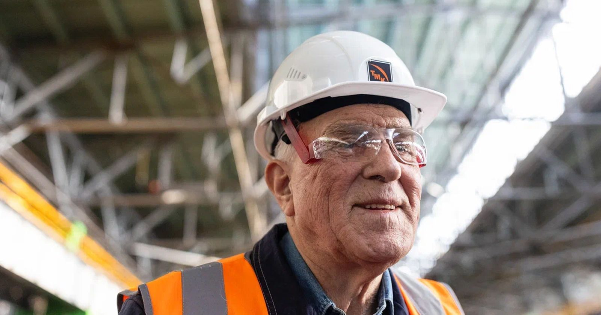
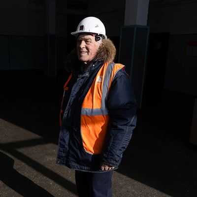
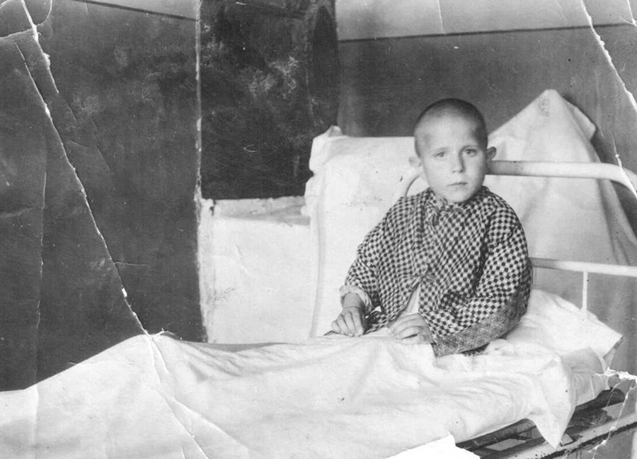
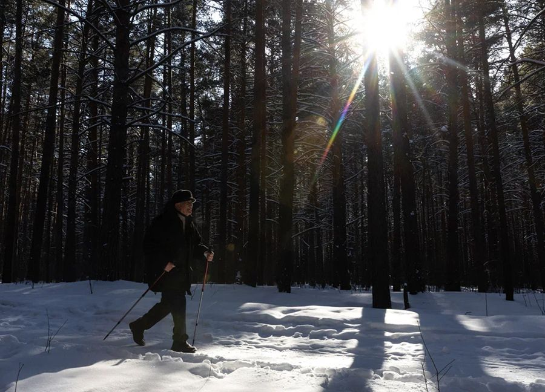

Юрий Николаевич Студеникин
Юрий Николаевич Студеникин: «На заводе его все знали, все уважали»
{kind=link}

Александр Николаевич ПоваляевДата рождения: 23.10. 1945. Трудился вальцовщиком в цехе B-2, старшим мастером трубоволочильного цеха B-3. Имеет звание «Почетного мастера металлургии», награжден медалью «За доблестный труд». Трудовой стаж — 48 лет.
В процессе работы над этой историей мы с Юрием Николаевичем побывали на заводе. На том месте, где стоял цех, в котором работал его отец, в цеху, где трудился он сам. Человек тонкий и сентиментальный Юрий Николаевич не мог сдержать слез и в то же время улыбки, хотя, по собственному признанию, поначалу на завод ехать не хотел. А как светились лица его коллег, которые впервые за несколько лет увидели своего старого знакомого…
{kind=link}
{kind=link}
{kind=link}
{kind=link}
{kind=link}
{kind=link}

 Юрий
Юрий Студеникин
В детстве родителям было особо не до нас. Отец и мать все время на работе. Да и много нас было, за всеми не уследишь.
У меня классным руководителем был Дим Димыч. Так вот мама его увидит и спрашивает: «Дим Димыч, как там мой?» — «Все хорошо, Анна Васильевна. Ежели что случится, я сам скажу». Так мать ни разу в школу и не сходила. Учеба у меня хорошо шла. Давались физика, математика. Цифровая память. На заводе потом пригодилась. Вот у меня 26 человек бригада: каждого табельный номер помню и день рождения, чтобы вовремя поздравить. Да и в работе были одни цифры. Марки стали, штуки, метры. Сейчас тоже удобно. Все номера телефонов помню. Удобно.
Жили в детстве тесно, как в купе. С одной стороны полати и с другой. В стене окно, посередине стол и сундук. Вот и вся комната. Кто-нибудь к нам из друзей в гости соберется, а его мать ему: мол, куда ты, у них же тесно. Но тесно везде было.
Зато не голодали. Сало всегда было. Яиц куриных, молока – в достатке. Молоко в печку поставят, оно цветом как кофе станет. Потом заквасят, и варенец получается. С хлебом самое то. Отец булок 15-20 хлеба разом покупал. Настоящего хлеба.
Дома невозможно было находиться. На улице в основном время проводили. Ходили на озеро, там мяч гоняли, уху варили в шалаше. А потом это озеро спустили в реку Каменку. Приехало разом несколько тысяч солдат, наставили палаток штук сто и начали рыть траншею шесть метров в ширину, шесть в глубину. По такой канаве все озеро и стекло в речку. Объясняли это тем, что расширяли торфяники. А нам торф зачем? Мы же дровами топили, углем. Эх, такое озеро нарушили. Вся округа возмущалась, потому что хорошо там охотиться было, рыбачить. Впоследствии оказалось, что озеро нужно было в подземные воды спустить, чтобы аэродром построить. Он и по сей день стоит: вертолетов там много, постоянно летают. Текст прямой речи
{kind=link}
{kind=link}
{kind=link}
 Владимир
Владимир Шарапов
Еще дрались кварталами на квартал. Сначала друг в друга картошку кидали, потом камнями стали. Бывало, в школе с одним человеком за партой сидишь, а вечером воюешь с ним за разные кварталы.
Юрий Студеникин
Я старался не драться особо. Однажды поехал в старый Каменск в книжный магазин учебники покупать. Кажется, в девятом классе учился тогда. А кинотеатр в старой части города получше, чем у нас. Дай, думаю, схожу. Билет в кино тогда десять копеек стоил. Учебники уже купил. Смотрю, подходят. Дай, говорят, три копейки. Не дам, отвечаю! А они кучкуются, мол, чужак. Вижу, руки у них прямо чешутся. Один и ударить уже успел. Тем временем в кинозал запускать начали, свет выключили. Я зашел, к шторке, которой вход затягивали, подошел и тихонько вышел. Чтобы не бить и не быть битым.
Позже через тот район демонстрация проходила. На одном из поворотов – колонка с водой. И парень, который меня тогда ударил, он там, склонился и попить хочет. А демонстрация же, наших парней полно. Подхожу к нему: ну что, тебя как, пинком или кулаком? Мне еще раньше сказали, что у него один глаз не видит. И я ему: могу тебе и второй глаз починить! Но ничего ему не сделал. Беги, говорю, передай своим дружкам спасибо.
Еще мы на стадионе часто бывали. Тогда наша футбольная команда с поселка заводскую обыграла, и все до единого футболом заболели. Стадион – второе после озера место, куда мы постоянно ходили. Зимой там же на коньках катались. Время свободное появилось, сразу на каток. На коньках еще на озеро бегал кататься. Вот уже апрель месяц, а все равно охота. Катаешься, перед тобой лед волнами, и ты проваливаешься. Но уже знаешь, что неглубоко. Бежишь домой, стараешься аккуратнее прошмыгнуть, чтобы мать не заметила. А она увидит, головой качает. «Дурачок, опять промок. Опять промок…»
Ну а стадион в 90-х продали. Сейчас он без дела стоит. И здание ДК, которое рядом, продали. А ведь его родители строили. Говорят, вместо стадиона гостиница будет. Видимо тому, кто его купил, так выгоднее. Мне это уже неинтересно. Я как мимо прохожу, с тяжелым сердцем на стадион посмотрю, плюну и дальше иду.
{kind=link}
{kind=link}
{kind=link}
{kind=link}
{kind=link}
{kind=link} Владимир
Владимир Шарапов
Брат Владимир у Юры был очень известным футболистом в городе. Его даже в свердловский «Уралмаш» звали. Но он не пошел.
Юрий Студеникин
Рассказывали, что удар у него был страшной силы. Володя еще хорошим столяром был. Нам клюшки для хоккея на зиму делал. Отец им очень гордился. У него остался инструмент столярный от деда Степана, и он все приговаривал: “Вот Вовке отдам”.
А я сам в футбол не играл, болельщиком был. Я же в детстве ногу сильно сломал. Где песок брали, место называлось песчанкой. Ходили туда, купались. Я был самым младшим из парней: мне пять лет, остальным – по восемь. И как-то они за подсолнухами полезли. И как будто хозяин это заметил, побежал за нами. Там канава была, осталась еще со строительства. В ней большие камни лежали. Все через нее перепрыгнули, а я не перепрыгнул, прямо в нее угодил. И никакого хозяина, который за нами гнался, не оказалось. Лежал там, пока женщина, которая корову гнала, меня не увидела.
Три года пролежал в особом санатории в другом городе. С оскольчатым переломом. Все время привязанный. Лишь два раза в год развязывали, когда родители приезжали.
Когда меня в армию призывали, врач сказал: да тебе тогда даже вывих не исправили. Это ошибка тех докторов.
{kind=link}

Юрий в больнице после перелома ноги, 1950 год
 Людмила
Людмила Студеникина
Он с тех пор всю жизнь прихрамывает. Когда я замуж выходила, свекровь спрашивала: «Люда, ты видишь, что Юра хромой?»
Юрий Студеникин
Так я старался не показывать. Отец говорил: никто не должен знать, что у тебя нога болит. Когда в армию призывали, чуть не взяли. Врач, седовласый такой, спрашивает, мол, болит нога? Не болит, отвечаю. Брат потом ругался: ты что, сдурел?! Будет марш-бросок, ты и подохнешь. В итоге, доктор написал, что годен к нестроевой.
Потом на завод, на тяжелую работу как ни в чем не бывало устроился. Сначала подручным, потом уже и вальцовщиком. Одну трубу выкатал, вторую, третью, четвертую, пятую, шестую, десятую. Норма – 1280 метров. И чтоб никаких задержек: лишний раз в туалет не отбежишь. В столовую – побыстрее, на пять минут. И так – каждый день. А в десяти метрах от тебя двухметровая пила режет трубы пополам, визжит. Тогда не было никаких берушей или затычек. Приду домой – визг в ушах. Говорю матери, все, увольняться надо, больше не могу.
Отцу как-то давно цыганка нагадала, что я полковником стану. А в итоге вальцовщиком по сменам проработал восемь лет. До восьмой категории.
Потом новый цех построили, и меня туда приказом директора завода перевели на должность мастера. И так приходилось носиться, что одна женщина сказала: «Быстрее, чем Студеникин, по лестницам никто не бегает!».
Еще такая история была. Январь. Заводские соревнования по лыжным гонкам в цеху. Раздельный старт. Встал на лыжи, а передо мной чемпион цеха. Попытался за ним ехать. Дыхалки уже не хватает, а я держусь за ним, держусь. И раз – у него первое место, а у меня – второе. Никто не верил, что такое возможно. Скосил Студеникин, говорят. А чемпион, который мастером у механиков был, он молчун сам по себе, мне советовал: да пусть болтают, внимания не обращай.
А нога всю жизнь болит. Особенно если перегрузка. Работаешь за начальника смены, бывает, в ночь – на завод. Еле-еле идешь, виду не подаешь. А там по цеху ходить много надо. Компресс себе какой-нибудь сделаешь, сам себя успокаиваешь: ничего, потерпи, отойдет. Сейчас больше на машине езжу. В лес хожу с палками – скандинавская ходьба. А что делать: жить-то надо.
{kind=link}
{kind=link} Владимир
Владимир Шарапов
Юра — мужичок такой спокойненький, уравновешенный. Но маленько бойкий. Особенно если Колчаком его называли, как отца, или врагом народа.
Людмила Студеникина
Юрий Николаевич очень спокойный, но есть у него своя хватка. Не дай Бог если с кем-то что случится. Никого в обиду не даст, ни родных, ни себя. Совершенно бесстрашный. Как-то один начальник при всех его оскорбил. И Юра к нему в кабинет пошел. Начальник на десять голов по рангу выше, но Юрию Николаевичу-то что. Пришел в кабинет и поговорил «по-мужски». Как ты мог! Встать! Тот встал, а Юрий Николаевич ему как даст! Все, конечно, про этот случай прознали. И до того уважали, а после стали еще сильнее. Даже тот начальник: «Юра, ты, — говорит, — меня извини». А Юрий Николаевич: «Надо знать, что говорить, когда и где. Одно дело — один на один, а другое — перед толпой рабочих».
{kind=link}
{kind=link}
{kind=link}
{kind=link} Юрий
Юрий Студеникин
В 1980 году мог на Олимпиаду поехать. Но надо было в Первом отделе комиссию пройти. Прихожу: «Вам не дают путевку». — «Почему?» — «Вы на режимном предприятии». — «А что там режимного? Я по всему Союзу ездил, везде такое оборудование». — «Вы слишком часто за начальника смены работали и знаете выпуск продукции. А это засекречено».
Посмеяться тоже было отчего. Одно время я был помощником начальника цеха по ремонту сооружений. Так надо же было ходить, проверять, как ремонты проходят. Поднимаюсь на крышу, а там, как выходишь с вентиляционного пролета, в 20 метрах четыре трубы стояли. Из них кислотный дым шел. И под ними значит крановщица лежит, загорает. «Извините, — говорю, — как вас зовут?» — Ну, допустим, Маша». — «Извините, Машенька, а вы знаете что находитесь сейчас в самом экологически неблагополучном месте… В России?» — «Нет, — говорю, — в Союзе». Слышу, кто-то хихикнул. Поднимаю голову, наверху вся бригада выстроилась. «Вы-то что смеетесь, — говорю, — не могли сами женщине объяснить?» Ну, она засобиралась, юбочку, кофточку надевает. А на улице жара. Одеяльце свое свернула и вышла.
{kind=link}
{kind=link}
{kind=link}
{kind=link}
{kind=link}
 Дмитрий
Дмитрий Берендеев
Когда я устроился на завод дедушка оттуда уже ушел. Но, еще будучи студентом, я там успел побывать и вот тогда дедушку застал. Он, по-моему, был мастером хозбригады. Такая, можно сказать, пенсионная должность. В его ведении всякие подсобные работы были ремонтные. Что-то сломалось, кран потек – что-то случилось, в общем, и дедушка уже идет.
Его все уважали. Он же всю жизнь на заводе провел. Его каждый знал. Помню, мы вместе с ним ходили. Он рассказывал где и какое оборудование находится, кто где работает. Это очень кстати было. Я же молодой парень, стесняюсь к руководству обратиться. А у дедушки всегда спросить можно.
{kind=link}

Описание фотоЛюдмила Студеникинаа 


Дмитрий Берендеев